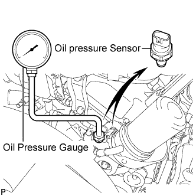

LUBRICATION SYSTEM > ON-VEHICLE INSPECTION |
| 1. CHECK ENGINE OIL LEVEL |
Warm up the engine, stop the engine and wait 5 minutes. The oil level should be between the low and full level marks on the dipstick.
If the oil level is low, check for leakage and add oil up to the full level mark.
| 2. INSPECT OIL PRESSURE |
Disconnect the oil pressure sensor connector.
Using a 24 mm deep socket wrench, remove the oil pressure sensor.
 |
Install an oil pressure gauge.
Warm up the engine.
Measure the oil pressure.
| Condition | Specified Condition |
| Idling | 29 kPa (0.3 kgf/cm2, 4.2 psi) or more |
| 3000 rpm | 294 to 588 kPa (3.0 to 6.0 kgf/cm2, 43 to 85 psi) |
Remove the oil pressure gauge.
 |
Apply adhesive to 2 or 3 threads of the oil pressure sensor.
Using a 24 mm deep socket wrench, install the oil pressure sensor.
Connect the oil pressure sensor connector.
Start the engine and check for engine oil leaks.